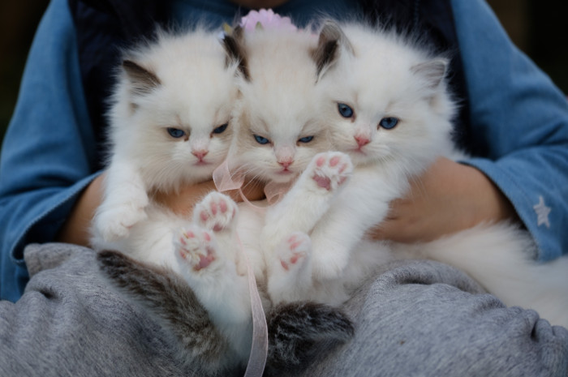

| Home | Registration | Program | Directions | Flyer |
In Brno on Friday, 20 November, we will hold what we hope will be the first of many Central European Category Theory Seminars. The goal is to bring together researchers in category theory and its applications from around the region to discuss ongoing projects, and to foster new connections between existing groups.
More information, practical and otherwise, will be posted here as the time of the conference approaches. In the meantime, the organisers, listed below, would be happy to answer any questions you may have.
John Bourke (Masaryk University)
Lukáš Vokřínek (Masaryk University)
Michael Lieberman (Brno University of Technology)
The seminar is funded in part by
|
|
 |
|